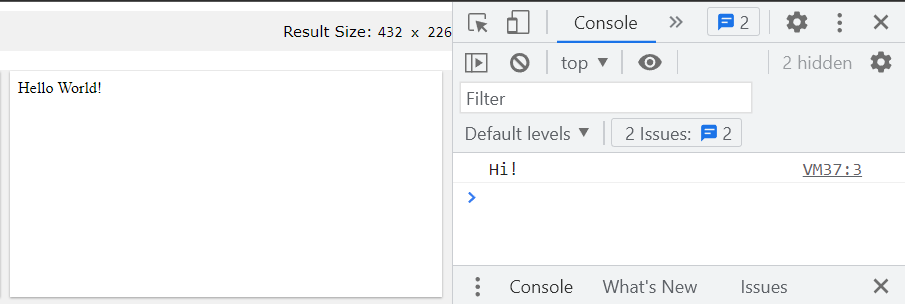

title
subtitle
On this page…
Exercise 1.1
Read and analyze (analytical reading)
Observe and describe. Make notes. Explore the links provided in the material. Document what you have learned. When you come to an example, make your own version and explore it deeply.
Complete Tutorials (w3schools)
- Developing with JavaScript • JS Errors • JS Debugging • JS Hoisting • JS Strict Mode • JS Style Guide • JS Best Practices • JS Mistakes • JS Performance • JS Reserved Words
- JavaScript basics JS HOME • JS Introduction
- JavaScript Versions • JS Versions
- JavaScript Statements, Variables, Operators • JS Output • JS Syntax • JS Statements • JS Comments • JS Variables • JS Operators • JS Arithmetic • JS Assignment • JS Data Types • JS Type Conversion
Complete Tutorials (MDN)
- The story of your first website It's a lot of work to create a professional website, so … What will your website look like? Dealing with files. HTML basics. CSS basics. Javascript basics. Publishing your sample code. How the web works. Web demystified. The web and web standards.
- JavaScript — Dynamic client-side scripting JavaScript is a programming language that allows you to implement complex things on web pages. Every time a web page does more than just sit there and display static information for you to look at…
- JavaScript Guide: Introduction This chapter introduces JavaScript and discusses some of its fundamental concepts.
Answer Questions in your own words
- What is full stack development? what technologies you need to know and understand?
- Describe the data flow in a web client/server environment.
- What are the differences between JavaScript running in the browser and language like PHP?
- Describe the process of designing client-server web apps. Compare to an essayist.
- Describe the process of solving a problem. What components need to be analyzed?
- What is progressive enhancement? How is it applied to web app development?
- What does it mean to "write code for readability"? Why is this critical?
- What is meant by "publication quality? Describe code conventions. (how many can you list and explain?)
- Where can JavaScript code be placed? where should it be placed?
- Explain what is unobtrusive JavaScript. Describe at least four (4) ways how to make JavaScript unobtrusive.
- What are the specifications for JavaScript? how is a scripting language defined in those specs?
- What are the eleven (11) common mistakes developers make in JavaScript?
- Explain the six (6) ways you can improve JavaScript performance?
- What is meant by imperative programming? Describe what JavaScript is
- Name two primary sources for JavaScript.
- What are the three ways to include JavaScript code into HTML document? Describe the pros and cons of using each.
- Explain why we delay the execution of JavaScript and then we accelerate the processing to a specific event.
- Explain why you would use a) document.write, b) console.log, c) alert dialogue, d) form element.
- Name at least three basic grammar rules for JavaScript statements.
- Explain the purpose and incorporation of comments in JavaScript code.
- Explain how to debug JavaScript code.
<!DOCTYPE html>
<html lang="en">
<head>
<title>meaningful title</title>
<meta name="viewport" content="width=device-width">
<meta charset="utf-8">
</head>
<body>
<script>
/* all scripts will go here */
console.log("Hi!");
document.write("Hello World!");
</script>
</body>
</html>
Expected Output

document.write() method writes content to the BODY element. console.log() method writes to the console, which is accessible through the "Inspect" menu (development tools).- dfd sdfd.
- dfd sdfd.
- dfd sdfd.